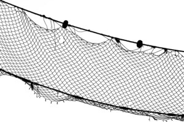

Home
Reports
⇐
͵ⲃ̅ⲧ̅ϥ̅ⲉ̅
⇒
Reset
Dev
ϫⲉⲗⲓ
B
(noun)
(
noun
)
net [
αμφιβολευς
]

2395-1-1
complete
766a
ϫⲉⲗⲓ
B
nn,
net
: Is 19 8
ⲣⲉϥϩⲓ ϫ.
(
S
ⲛⲉϫ ϣⲛⲏ
)
ἀμφιβολεύς
.
See also:
view
ϣⲛⲉ
S
A
L
B
ϣⲛⲏ
S
B
F
plural:
ϣⲛⲏⲩ
,
ϣⲛⲏⲩⲉ
S
plural:
ϣⲛⲏⲟⲩ
A
B
(
noun masculine
) net [
δικτυον
,
αμφιβλητρον
]
903
view
ⲁⲃⲱ
S
B
F
ⲁⲃⲟⲩ
A
plural:
ⲁⲃⲟⲟⲩⲉ
S
(
noun feminine
) drag net
for fish or animals
[
σαγηνη
]
86
view
ϩⲁⲗⲓⲃ
,
ϩⲁⲗⲓϥ
S
(
noun
) casting-net
2150